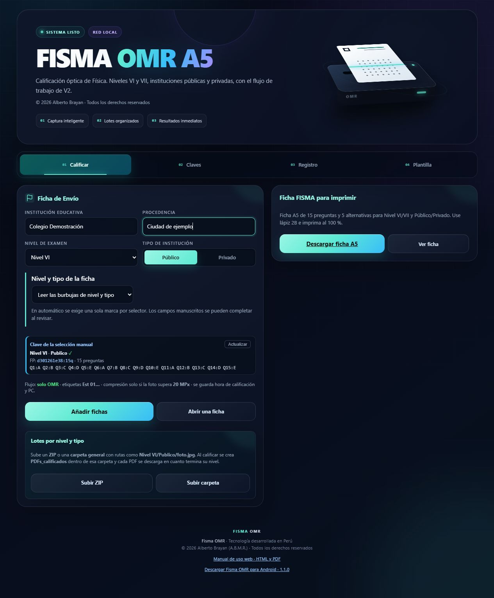
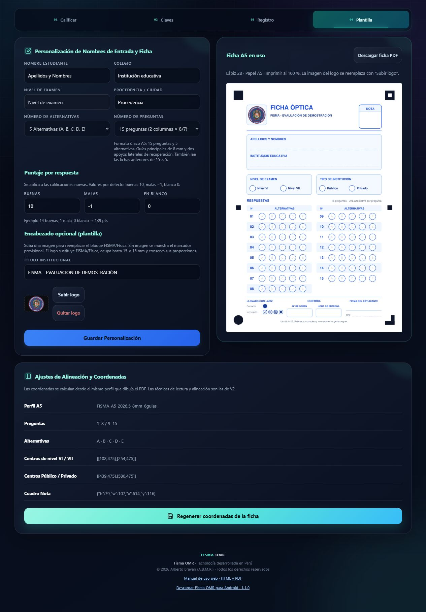
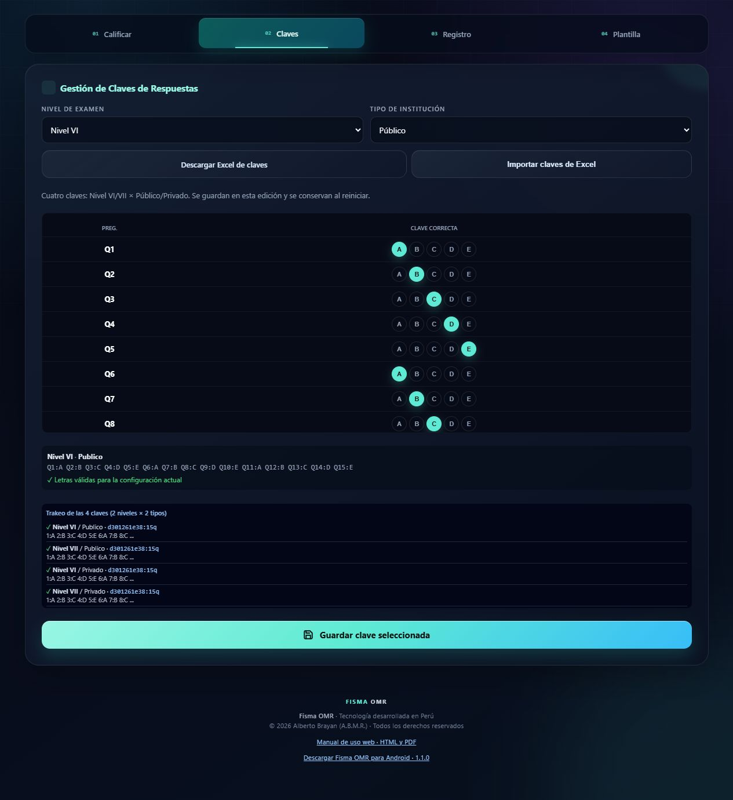
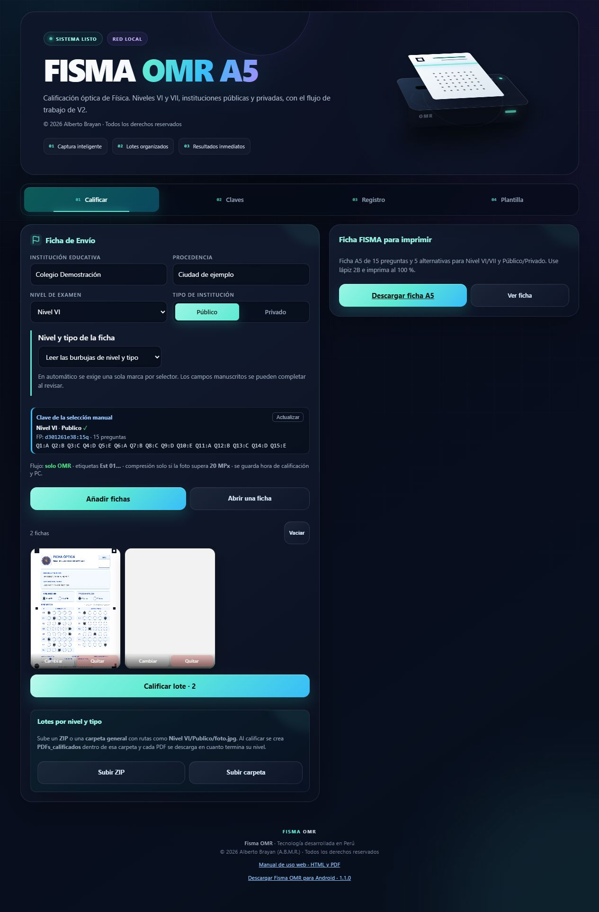
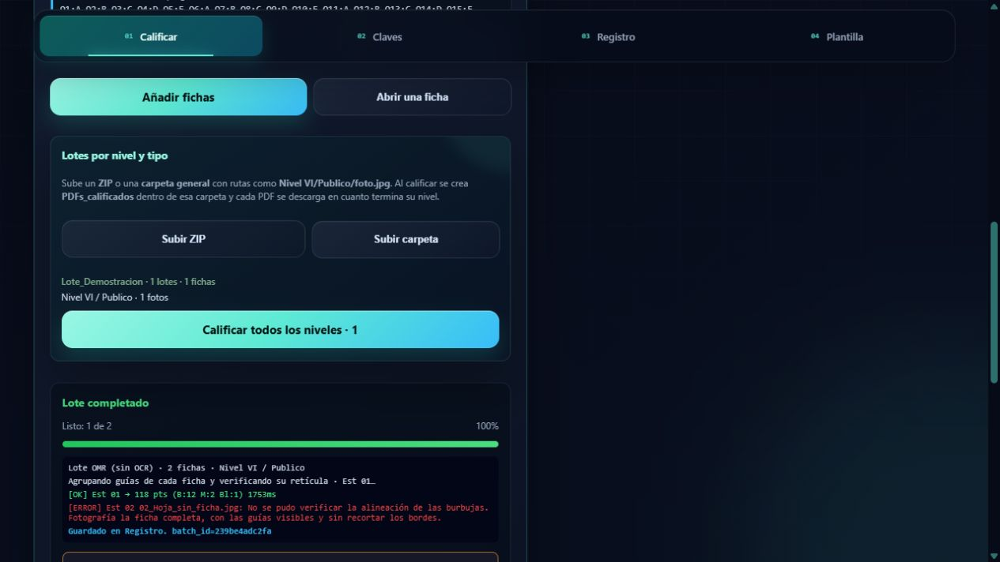
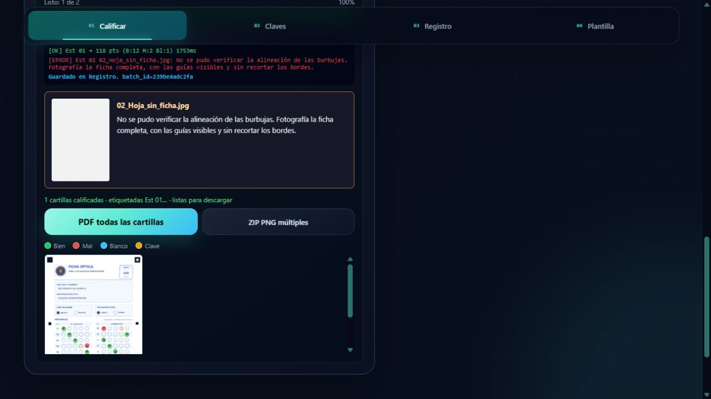
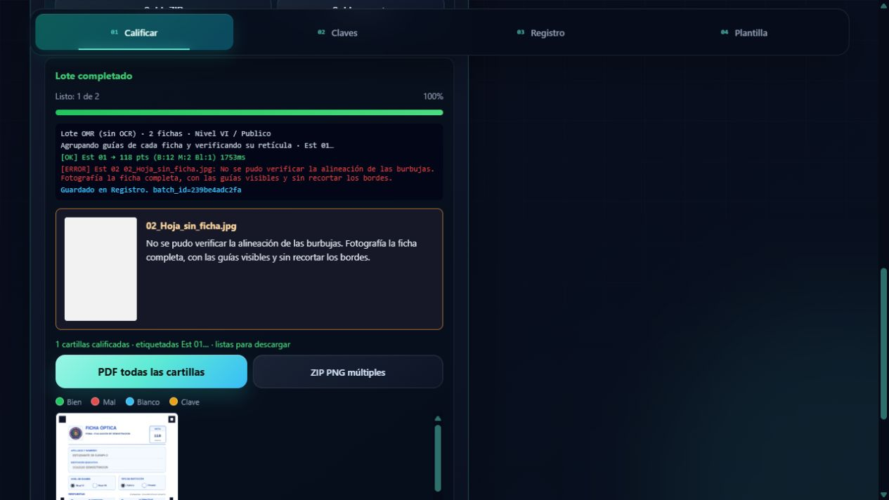
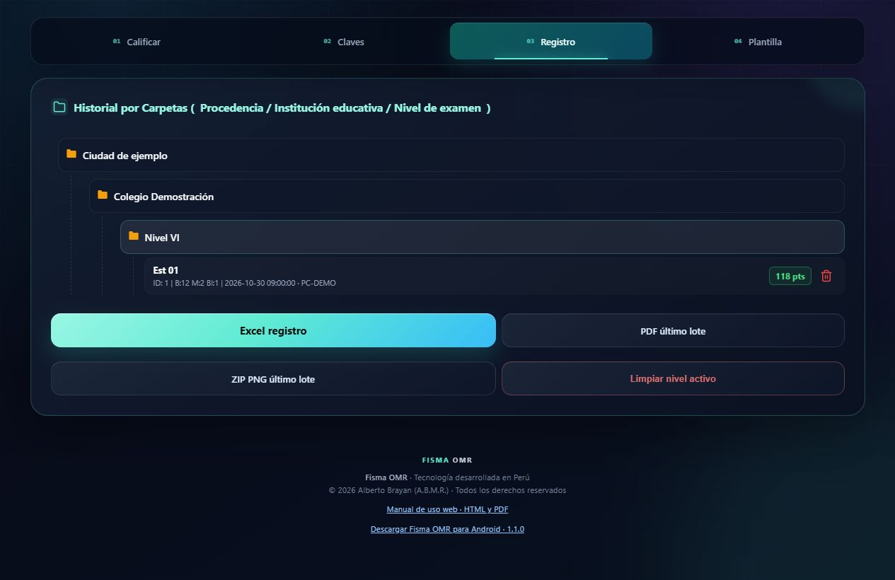

Manual de uso web
De la ficha óptica a los resultados. Una guía para preparar claves, cargar fotografías, revisar lecturas y descargar calificaciones desde la web de escritorio.
Abrir el programa y orientarse
Primero configura; después califica.
Mantén encendido el equipo que ejecuta Fisma OMR. Inicia IniciarFISMA.bat desde la carpeta del proyecto y espera el mensaje del servidor. Abre http://127.0.0.1:5026/ en ese mismo equipo. Si es una instalación nueva, consulta el README del proyecto y ejecuta antes PrepararWindows.bat.
Para entrar desde otro equipo de la misma red, utiliza la dirección que aparece como Red local en la consola. La IP puede cambiar; 127.0.0.1 solo identifica al equipo donde estás navegando. La interfaz está pensada para PC.
- Plantilla: personaliza el encabezado y define el puntaje.
- Claves: completa las respuestas de cada nivel y tipo de institución.
- Calificar: añade fotos, un ZIP o una carpeta y procesa el lote.
- Registro: consulta lo guardado y descarga el Excel.

Preparar la ficha y el puntaje
Una misma geometría para imprimir y leer.
- Abre Plantilla. Comprueba el formato fijo de 15 preguntas y 5 alternativas.
- Define los puntos por buena, mala y respuesta en blanco. Por defecto son 10, -1 y 0; puedes usar los valores de tu evaluación.
- Edita el título institucional y usa Subir logo para reemplazar la imagen. El logo conserva sus proporciones dentro del espacio del encabezado.
- Pulsa Guardar Personalización. Después descarga la ficha PDF y haz una impresión de prueba.
Imprime en papel A5 de 148 × 210 mm, a tamaño real / 100 %. Desactiva ajustar a página. Las cuatro guías principales son de 8 mm y los dos apoyos laterales de 4 mm. No dibujes encima de ellos ni cambies las posiciones de las burbujas.
Usa lápiz 2B y rellena por completo una alternativa. Los ejemplos de visto, aspa, rayado y punto central ilustran llenados incorrectos. El número de orden, la hora y la firma son manuscritos.

Ingresar claves manualmente
Cada combinación tiene su propia clave.
- Entra en Claves y elige el Nivel de examen: Nivel VI o Nivel VII.
- Selecciona Público o Privado.
- Marca una letra de A a E para cada pregunta, desde Q1 hasta Q15. Desplázate dentro de la tabla para completar las últimas filas.
- Revisa el resumen y pulsa Guardar clave seleccionada.
- Repite el procedimiento para las demás combinaciones que vayas a calificar.
| Nivel | Tipo | Clave requerida |
|---|---|---|
| VI | Público | 15 letras |
| VI | Privado | 15 letras |
| VII | Público | 15 letras |
| VII | Privado | 15 letras |

Trabajar con claves desde Excel
Descarga la plantilla de esta edición; conserva su estructura.
- En Claves, pulsa Descargar Excel de claves y abre el archivo .xlsx.
- Trabaja en la hoja Claves. Las preguntas aparecen en filas; las columnas están agrupadas en PÚBLICO y PRIVADO, con Nivel VI y Nivel VII dentro de cada grupo.
- Introduce únicamente letras A, B, C, D o E en las 15 filas de cada clave que necesites. No uses fórmulas ni cambies los encabezados o las celdas combinadas.
- Guarda el archivo. En la web pulsa Importar claves de Excel y selecciónalo.
- Comprueba el mensaje de importación y verifica el resumen de claves antes de calificar.
La tabla de ejemplo ilustra la organización; no es una clave oficial. Completa todas las preguntas de cada columna utilizada.
La importación conserva las otras claves existentes y actualiza las combinaciones completas del archivo. Una columna totalmente vacía se omite; no borra la clave anterior. Una columna parcialmente llena se rechaza.
Si aparece un error, corrige el Excel y vuelve a importarlo. El archivo debe conservar la hoja Claves y tener extensión .xlsx; el límite de carga de claves es 5 MB.
| Pregunta | Público / VI | Público / VII | Privado / VI | Privado / VII |
|---|---|---|---|---|
| 1 | A | B | C | D |
| 2 | B | C | D | E |
| … | … | … | … | … |
| 15 | E | A | B | C |
Calificar una foto o varias fotos
Añadir imágenes crea una cola; el procesamiento empieza al calificar.
- En Calificar, completa Institución educativa y Procedencia. Estos datos se aplican al lote y no se extraen de la escritura de la ficha.
- Elige cómo resolver el nivel y tipo: lectura de burbujas o selección manual. Comprueba que exista una clave completa para los grupos usados.
- Pulsa Añadir fichas para elegir varias imágenes, o Abrir una ficha para añadir una. Las miniaturas muestran los archivos pendientes.
- Antes de procesar, usa Cambiar para sustituir una foto, Quitar para retirar una de la cola o Vaciar para limpiar la selección pendiente.
- Pulsa Calificar lote · N. Espera a que termine y revisa cuántas fotos fueron procesadas.
| Modo | Qué determina la clave |
|---|---|
| Leer las burbujas | Una marca de nivel y una de tipo en cada ficha. |
| Selección manual | El nivel y el tipo elegidos arriba; se aplican a toda la cola. |

Procesar ZIP y carpetas organizadas
La carpeta de cada fotografía indica su nivel y tipo.
- Exporta el lote desde Android o prepara una carpeta con la estructura indicada abajo. Conserva el manifest.json de la app cuando exista.
- En la web usa Subir ZIP o Subir carpeta. En los navegadores que no permiten seleccionar una carpeta directamente, utiliza el selector alternativo o un ZIP.
- Comprueba la lista de grupos detectados y la cantidad de fotos de cada uno.
- Pulsa Calificar todos los niveles. El sistema recorre los grupos y aplica la clave que corresponde a su carpeta.
- Si el navegador pide una carpeta de destino, selecciónala para guardar los PDF en PDFs_calificados. Si no la autorizas o la función no está disponible, usa las descargas del navegador.
OMR_Fisma/
manifest.json
Nivel VI/
Publico/foto_01.jpg
Privado/foto_02.jpg
Nivel VII/
Publico/foto_03.jpg
Privado/foto_04.jpg
Leer resultados y descargar
Una revisión visual breve antes de entregar las notas.
- Comprueba el resumen: fotos calificadas frente al total enviado. Un lote terminado puede incluir observaciones.
- Abre las miniaturas para ampliar las fichas. El cuadro Nota muestra el puntaje; al pie aparecen Buenas, Malas y En blanco.
- Descarga PDF todas las cartillas y ZIP PNG múltiples para el lote de fotos sueltas.
- Para lotes organizados, usa los PDF por nivel/tipo y ZIP todos los PDF cuando estén disponibles.
- Abre Registro y pulsa Excel registro para obtener la tabla de resultados.
| Señal | Lectura de la salida |
|---|---|
| Verde | Alternativa leída que coincide con la clave. |
| Rojo | Respuesta incorrecta o lectura de marca doble. |
| Azul | Pregunta considerada en blanco. |
| Naranja | Ubicación de la alternativa correcta como referencia. |

Revisar una observación
La fotografía fallida se conserva visible con su motivo.
- Localiza la tarjeta de observación y lee su mensaje completo.
- Pulsa la miniatura para ampliar la foto original. Distingue un problema de encuadre de una clave incompleta o un selector vacío.
- Corrige la causa: configura la clave, elige el modo manual adecuado o vuelve a fotografiar la ficha.
- Añade únicamente las fotos pendientes a una nueva cola y procesa otra vez. Revisa el Registro para evitar duplicar o reemplazar una enumeración sin intención.
Si no se verifica la alineación, muestra la ficha completa y sus guías. Mejora la luz, evita reflejos y mantén la cámara firme. El lector agrupa las guías de una misma ficha para no mezclarlas con las de otra hoja visible al costado.
Si el mensaje indica nivel o tipo sin marcar/doble, corrige la marca o usa una selección manual que conozcas. Si falta la clave, completa las 15 respuestas del grupo indicado.

Consultar el Registro y conservar datos
Descarga, organiza y respalda antes de limpiar.
- Abre Registro y despliega las carpetas de procedencia, institución y nivel para consultar las filas.
- Descarga Excel registro. El archivo incluye Detalle General y hojas separadas por nivel cuando hay resultados de esos niveles.
- Usa PDF último lote o ZIP PNG último lote mientras el lote correspondiente esté disponible en la sesión.
- Antes de eliminar filas o usar Limpiar nivel activo, descarga el Excel y los PDF que necesitas conservar.
- Para una copia de seguridad completa, cierra el servidor y copia la carpeta de trabajo con las claves, configuración, reporte, uploads y static/processed.
Configuración, claves y resultados Excel se conservan en el disco de esta instalación. El acceso rápido al último lote depende de la sesión del servidor: conserva las descargas y los enlaces de lote que necesites antes de cerrar.
La enumeración vuelve a empezar en cada lote. En esta edición, guardar de nuevo el mismo nombre enumerado (por ejemplo, Est 01), nivel y tipo reemplaza la fila anterior de esa combinación, incluso si cambia la institución o procedencia. Por eso conviene descargar y respaldar el registro de cada lote antes de procesar otro del mismo grupo.

Soluciones rápidas y rutina de cierre
Consulta esta página cuando el flujo se detenga.
- Revisa observaciones y confirma que no falten fichas por procesar.
- Descarga el Excel y los PDF de todos los grupos utilizados.
- Guarda también el ZIP/fotos originales y la versión del Excel de claves de esa evaluación.
- Haz una copia de seguridad de los datos y después cierra el servidor.
| Qué ocurre | Qué hacer |
|---|---|
| La web no abre | Inicia el servidor y revisa la consola. Usa 127.0.0.1:5026 en el mismo PC; en otro equipo, la IP de Red local. |
| Otro equipo no conecta | Confirma que ambos estén en la misma red, que el servidor siga abierto y que Windows permita esa conexión en la red de trabajo. |
| La página parece antigua | Pulsa Ctrl + F5 después de una actualización del programa. |
| Falta una clave | Revisa la combinación exacta de nivel y tipo. Completa y guarda Q1 a Q15. |
| El ZIP no detecta grupos | Conserva rutas Nivel VI/Publico, Nivel VI/Privado, Nivel VII/Publico o Nivel VII/Privado. |
| No se alinean las guías | Revisa la miniatura del fallo. Fotografía toda la ficha, sin recortes, con luz uniforme y sin cubrir las guías. |
| No baja el último PDF | Utiliza el enlace del lote al finalizar. Si reiniciaste el servidor, conserva el PDF previamente descargado o vuelve a procesar el lote con control del Registro. |
| Hay una lectura doble | Amplía la foto y comprueba borrados y marcas. Si la decisión es ambigua, corrige la ficha o repite la captura. |